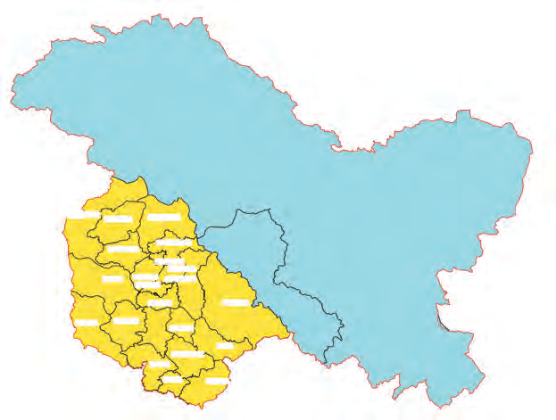
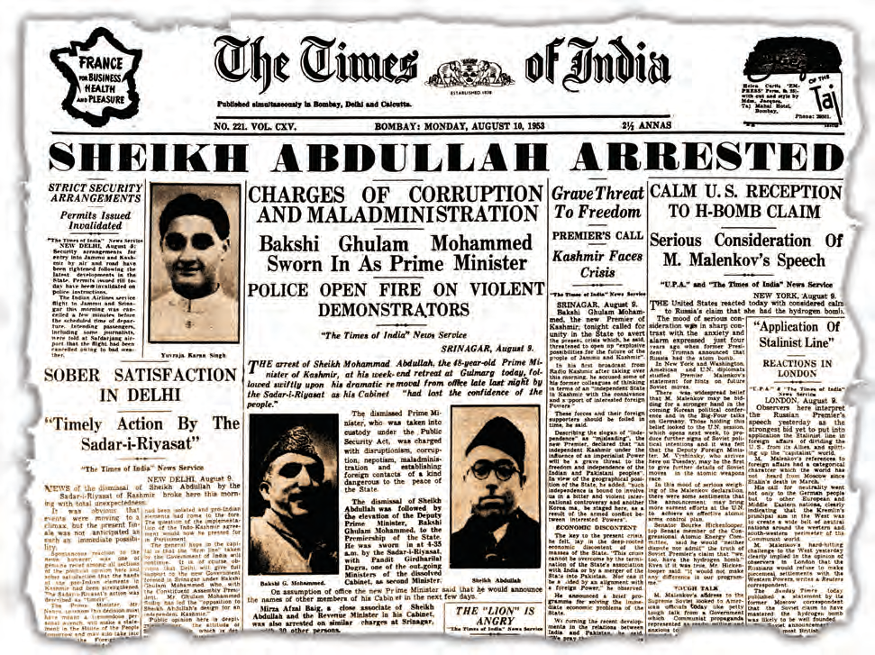
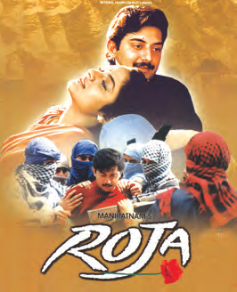
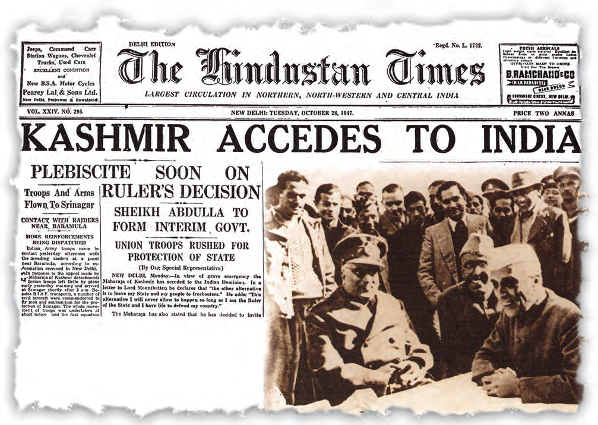
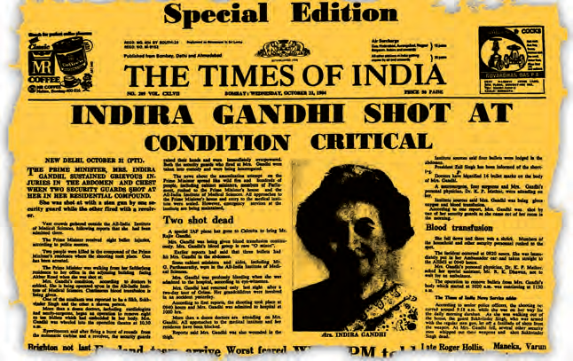
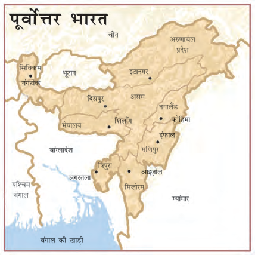
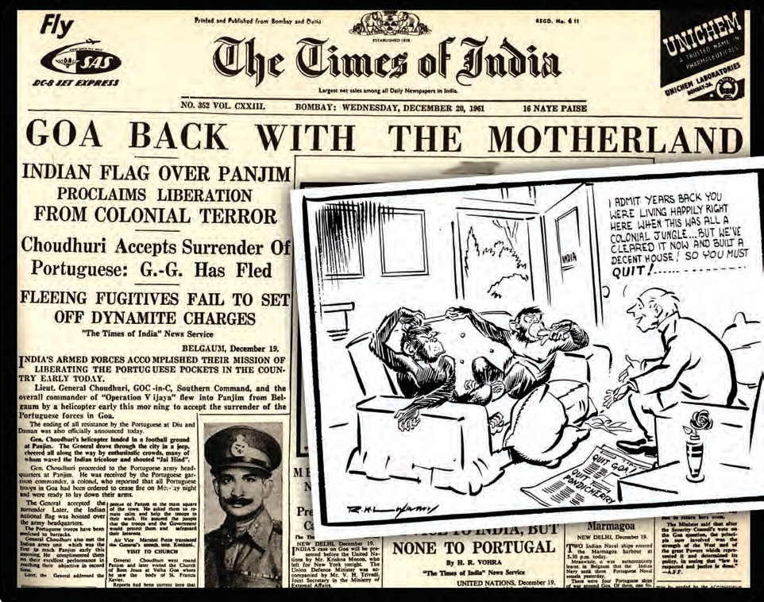

अध्याय 14: क्षेत्रीय आकांक्षाएँ
(Regional Aspirations) - NCERT Master Notes
1. क्षेत्रीय आकांक्षाएँ क्या हैं? (Rise of Regionalism)
प्रिय विद्यार्थियों, भारत विश्व का सबसे बड़ा लोकतांत्रिक और विविधतापूर्ण देश है। यहाँ विभिन्न धर्मों, भाषाओं, जातियों और संस्कृतियों के लोग एक साथ रहते हैं। 1980 के दशक को भारतीय राजनीति में 'क्षेत्रीय आकांक्षाओं का दशक' माना जाता है।
क्षेत्रीय आकांक्षा (Regional Aspiration) का अर्थ: जब किसी विशेष भौगोलिक क्षेत्र या प्रांत के लोग अपनी विशिष्ट भाषाई, सांस्कृतिक, social या आर्थिक पहचान को बनाए रखने के लिए विशेष अधिकारों, स्वायत्तता (Autonomy) या फिर एक अलग राजनीतिक इकाई (जैसे अलग राज्य या देश) की मांग करते हैं, तो इसे क्षेत्रीय आकांक्षा कहा जाता है।
भारत का लोकतांत्रिक दृष्टिकोण (The Democratic Approach):
- विविधता का सम्मान: कई देशों ने विविधता को राष्ट्रीय एकता के लिए खतरा माना और उसे दबाने की कोशिश की (जैसे श्रीलंका)। लेकिन भारत ने माना कि क्षेत्रीय मांगें लोकतंत्र का स्वाभाविक हिस्सा हैं।
- एकता और विविधता में संतुलन: भारतीय संविधान में विविधता का सम्मान करने और विभिन्न क्षेत्रों को अपनी विशिष्टता बनाए रखने के लिए लचीला रुख अपनाया गया है। भारत को 'राज्यों का संघ' (Union of States) कहा गया है।

चित्र 1: जम्मू-कश्मीर की राजनीतिक और भौगोलिक विविधता का परिदृश्य (NCERT Textbook Visual).
भाग 2: जम्मू और कश्मीर का मामला (The Kashmir Issue)
जम्मू और कश्मीर का मुद्दा आजादी के समय से ही भारतीय राजनीति, कूटनीति और राष्ट्रीय सुरक्षा का सबसे संवेदनशील विषय रहा है। कश्मीर की कहानी स्वायत्तता की मांग, राजनैतिक अस्थिरता और सीमा-पार संघर्ष की एक जटिल दास्तान है।
1. ऐतिहासिक पृष्ठभूमि (1947 का विलय)
1947 में भारत के विभाजन के समय जम्मू-कश्मीर एक देशी रियासत (Princely State) थी, जिसके राजा हरि सिंह (हिंदू शासक) थे, जबकि राज्य की बहुसंख्यक आबादी मुस्लिम थी।
- विलय का संकट: राजा हरि सिंह न भारत में शामिल होना चाहते थे और न ही पाकिस्तान में। वे कश्मीर को एक स्वतंत्र देश रखना चाहते थे। पाकिस्तानी नेताओं का मानना था कि मुस्लिम बहुल होने के कारण कश्मीर को पाकिस्तान का हिस्सा होना चाहिए।
- कबीलाई हमला (अक्टूबर 1947): पाकिस्तान ने कबीलाई उग्रवादियों (पश्तूनों) और अपनी सेना के सहारे कश्मीर पर हमला कर दिया। संकट में राजा हरि सिंह ने भारत सरकार से सैन्य सहायता मांगी।
- विलय पत्र (Instrument of Accession): भारत ने शर्त रखी कि सैन्य सहायता तभी दी जाएगी जब राजा विलय पत्र पर हस्ताक्षर करेंगे। 26 अक्टूबर 1947 को राजा हरि सिंह ने विलय पत्र पर हस्ताक्षर किए और कश्मीर कानूनी रूप से भारत का हिस्सा बन गया।
- शेख अब्दुल्ला और नेशनल कॉन्फ्रेंस: कश्मीर के सबसे लोकप्रिय नेता शेख अब्दुल्ला (जिन्होंने 'नेशनल कॉन्फ्रेंस' पार्टी बनाई थी) ने इस विलय का पुरजोर समर्थन किया क्योंकि वे धर्मनिरपेक्ष थे और पाकिस्तान की सांप्रदायिक राजनीति के खिलाफ थे।
शेख मोहम्मद अब्दुल्ला (1905-1982)
जीवन परिचय व योगदान: जम्मू-कश्मीर के सबसे लोकप्रिय धर्मनिरपेक्ष नेता। इन्होंने महाराजा हरि सिंह के खिलाफ लोकतंत्र समर्थक आंदोलन का नेतृत्व किया और 'नेशनल कॉन्फ्रेंस' की स्थापना की। कश्मीर के भारत में विलय के बाद वे 1947 में वहाँ के पहले प्रधानमंत्री बने। उन्होंने ऐतिहासिक भूमि सुधार किए। 1974 के इंदिरा-शेख समझौते के बाद वे पुनः राज्य के मुख्यमंत्री बने।

चित्र 2: प्रधानमंत्री जवाहरलाल नेहरू और कश्मीर के लोकप्रिय नेता शेख अब्दुल्ला (NCERT Archive Photo).
2. अनुच्छेद 370: विशेष स्वायत्तता और आंतरिक राजनीति
विलय के बाद जम्मू-कश्मीर को भारतीय संविधान के अनुच्छेद 370 के तहत एक विशेष और अनूठा दर्जा दिया गया।
- विशेष अधिकार: जम्मू-कश्मीर का अपना एक अलग संविधान था, अपना अलग झंडा था, और संसद द्वारा बनाए गए कानून (जैसे मौलिक अधिकार, नीति निदेशक तत्व, वित्तीय आपातकाल) राज्य सरकार की सहमति के बिना वहाँ सीधे लागू नहीं होते थे। बाहरी राज्यों के लोग वहाँ भूमि नहीं खरीद सकते थे।
- आंतरिक राजनीति (1948-1986):
- 1948 में शेख अब्दुल्ला जम्मू-कश्मीर के प्रधानमंत्री बने और ऐतिहासिक भूमि सुधार किए।
- 1953 में केंद्र सरकार के साथ स्वायत्तता के मुद्दे पर मतभेद के कारण शेख अब्दुल्ला को मुख्यमंत्री पद से बर्खास्त कर दिया गया और लगभग 2 दशक तक नजरबंद रखा गया।
- 1974 में ऐतिहासिक 'इंदिरा-शेख समझौता' हुआ, जिसके बाद शेख अब्दुल्ला ने कश्मीर को भारत का अभिन्न अंग स्वीकार किया और वे पुनः मुख्यमंत्री बने। 1982 में उनकी मृत्यु के बाद उनके पुत्र फारूक अब्दुल्ला सत्ता में आए।

चित्र 3: जम्मू और कश्मीर का भौगोलिक मानचित्र (दिखाते हुए LoC और विभिन्न सीमावर्ती इलाके) (NCERT Book Map).
3. 1987 का ऐतिहासिक चुनाव और उग्रवाद (Militancy) का उदय
1986 में फारूक अब्दुल्ला ने कांग्रेस के साथ एक राजनैतिक गठबंधन किया। इस गठबंधन ने 1987 के विधानसभा चुनावों में भाग लिया।
- चुनाव में धांधली के आरोप: 1987 के चुनावों में विपक्ष (मुस्लिम यूनाइटेड फ्रंट - MUF) के पक्ष में भारी लहर थी, लेकिन नतीजों में फारूक अब्दुल्ला की पार्टी को भारी बहुमत मिला। जनता और विपक्षी नेताओं का मानना था कि चुनावों में बड़े पैमाने पर धांधली (rigging) हुई है।
- लोकतंत्र से मोहभंग: धांधली के आरोपों के बाद कश्मीरी युवाओं का लोकतांत्रिक प्रक्रिया से विश्वास उठ गया। वे सोचने लगे कि शांतिपूर्ण तरीके से अपनी आवाज उठाना व्यर्थ है।
- सशस्त्र विद्रोह (1989): चुनाव में खड़े हुए कई विपक्षी कार्यकर्ता (जैसे सलाहुद्दीन, यासीन मलिक) बंदूक उठाकर अलगाववादी उग्रवादी बन गए। 1989 से कश्मीर में उग्रवाद (militancy) और आतंकवाद का भयानक दौर शुरू हुआ, जिसे पाकिस्तान ने हथियारों, प्रशिक्षण और वित्तीय सहायता देकर हवा दी।
- कश्मीरी पंडितों का पलायन (1990): जनवरी 1990 में आतंकियों द्वारा कश्मीरी हिंदुओं (पंडितों) को निशाना बनाए जाने के बाद, घाटी से लगभग सभी कश्मीरी पंडितों को अपनी जान बचाकर जम्मू और देश के अन्य हिस्सों में शरणार्थी बनकर जाना पड़ा।

चित्र 4: कश्मीर संघर्ष की प्रमुख ऐतिहासिक घटनाओं की समयरेखा (NCERT Infographic Timeline).
4. कश्मीर की वर्तमान स्थिति: अनुच्छेद 370 का हटना (अगस्त 2019)
जम्मू-कश्मीर की स्वायत्तता और अलगाववाद की समस्या को हल करने के लिए भारत सरकार ने 5 अगस्त 2019 को एक ऐतिहासिक कदम उठाया:
- संवैधानिक बदलाव: भारत सरकार ने संसद में कानून पारित कर अनुच्छेद 370 को पूरी तरह से प्रभावहीन कर दिया। इसके साथ ही जम्मू-कश्मीर को मिलने वाला विशेष दर्जा समाप्त हो गया।
- राज्यों का पुनर्गठन: जम्मू-कश्मीर राज्य का पुनर्गठन कर उसे दो केंद्र शासित प्रदेशों (Union Territories) में विभाजित कर दिया गया:
1. जम्मू और कश्मीर: जहाँ विधानसभा (Legislature) का प्रावधान है।
2. लद्दाख: जिसे बिना विधानसभा के सीधे केंद्र सरकार (उप-राज्यपाल) के नियंत्रण में रखा गया।
- पूर्ण राष्ट्रीय एकीकरण: इस फैसले के बाद भारत के अन्य राज्यों के नागरिक भी अब जम्मू-कश्मीर में जमीन खरीद सकते हैं, सरकारी नौकरियों के लिए आवेदन कर सकते हैं और वहाँ के निवासियों को भी भारतीय संविधान के सभी अधिकार और कानून (जैसे शिक्षा का अधिकार, आरटीआई) सीधे प्राप्त हुए हैं। वर्तमान में वहाँ विकास कार्यों और लोकतांत्रिक बहाली के तहत विधानसभा चुनाव भी कराए गए हैं।
भाग 3: पंजाब संकट (The Punjab Crisis)
पंजाब भारत का एक बेहद समृद्ध और कृषि प्रधान राज्य है। लेकिन 1980 के दशक में पंजाब को धार्मिक और राजनैतिक पहचान के मेल के कारण चरमपंथ और उग्रवाद की भयानक आग का सामना करना पड़ा।
1. पंजाब का गठन और अकाली दल
आजादी के बाद पंजाब में सिक्खों की भाषाई पहचान को लेकर 'पंजाबी सूबा आंदोलन' चला। 1966 में सरकार ने पंजाब का पुनर्गठन किया, जिससे दो नए राज्य बने—पंजाब (पंजाबी सूबा सिक्ख बहुल) और हरियाणा (हिंदी भाषी हिंदू बहुल)। पंजाब की राजधानी चंडीगढ़ को एक केंद्र शासित प्रदेश बनाकर दोनों राज्यों की संयुक्त राजधानी बनाया गया।
- राजनैतिक संकट: शिरोमणि अकाली दल ने 1967 और 1977 में गठबंधन सरकार बनाई, लेकिन वे अपना कार्यकाल पूरा नहीं कर पाए क्योंकि केंद्र की कांग्रेस सरकार ने उन्हें बर्खास्त कर दिया।
- आनंदपुर साहिब प्रस्ताव (1973): अकालियों ने अपनी राजनैतिक पकड़ मजबूत करने के लिए 1973 में आनंदपुर साहिब में एक प्रस्ताव पारित किया। इस प्रस्ताव में मांग की गई कि:
- केंद्र सरकार का नियंत्रण केवल रक्षा, विदेश नीति, संचार और मुद्रा तक सीमित हो और बाकी सभी अधिकार पंजाब राज्य को दिए जाएँ (अधिक स्वायत्तता)।
- सिक्ख कौम (समुदाय) के लिए विशेष पहचान और धार्मिक प्रभुत्व को मान्यता दी जाए।
- विवाद: केंद्र सरकार और आलोचकों ने इस प्रस्ताव को 'अलगाववादी' (सिक्खों के लिए अलग देश - खालिस्तान) की दिशा में उठाया गया कदम माना।
मास्टर तारा सिंह (1885-1967)
जीवन परिचय व योगदान: सिख समुदाय के प्रमुख धार्मिक और राजनीतिक नेता। वे शिरोमणि गुरुद्वारा प्रबंधक कमेटी (SGPC) के शुरुआती संस्थापकों में से एक थे और स्वतंत्रता संग्राम का समर्थन किया। आजादी के बाद उन्होंने सिखों के लिए अलग 'पंजाबी सूबा' (भाषाई आधार पर पंजाब राज्य) के गठन के लिए चले ऐतिहासिक आंदोलन का कुशल नेतृत्व किया।
2. चरमपंथ का उदय और ऑपरेशन अमृतसर (June 1984)
1980 के दशक की शुरुआत में अकाली दल का नेतृत्व नरमपंथियों से छीनकर चरमपंथियों (Extremists) के हाथ में चला गया।
- भिंडरांवाले की भूमिका: जरनैल सिंह भिंडरांवाले के नेतृत्व में चरमपंथी सिक्खों ने सिक्खों के लिए एक अलग देश—खालिस्तान—की मांग शुरू की और हिंसक गतिविधियां तेज कर दीं।
- स्वर्ण मंदिर पर कब्जा: भिंडरांवाले और उसके हथियारबंद समर्थकों ने अमृतसर के पवित्र स्वर्ण मंदिर (Golden Temple) परिसर को अपना मुख्यालय बना लिया और वहाँ भारी मात्रा में आधुनिक हथियार और गोला-बारूद जमा कर लिए।
- ऑपरेशन ब्लू स्टार (जून 1984): सरकार ने जब देखा कि बातचीत विफल हो चुकी है, तो प्रधानमंत्री इंदिरा गांधी ने सेना को स्वर्ण मंदिर को उग्रवादियों से मुक्त कराने का आदेश दिया। इस सैन्य कार्रवाई को 'ऑपरेशन ब्लू स्टार' कहा गया।
- परिणाम: सेना ने मंदिर परिसर में घुसकर भिंडरांवाले और उसके साथियों को मार गिराया और मंदिर को मुक्त कराया।
- भावनाओं पर चोट: इस सैन्य कार्रवाई के दौरान अकाल तख्त और मंदिर परिसर को क्षति पहुँची, जिससे पूरी दुनिया के सिक्ख समुदाय की धार्मिक भावनाओं को बहुत गहरी ठेस पहुँची। वे इस कार्रवाई को अपने धर्म पर हमला मानने लगे।

चित्र 5: अमृतसर का स्वर्ण मंदिर (Golden Temple) जो 1984 के पंजाब संकट का प्रमुख केंद्र बना (NCERT Textbook Photo).
3. इंदिरा गांधी की हत्या और 1984 के सिक्ख-विरोधी दंगे
ऑपरेशन ब्लू स्टार के आक्रोश के बदले स्वरूप, 31 अक्टूबर 1984 को इंदिरा गांधी के दो सिक्ख अंगरक्षकों ने उनकी गोली मारकर हत्या कर दी।
- भयानक दंगे: इंदिरा गांधी की मौत की खबर फैलते ही दिल्ली, कानपुर, बोकारो और उत्तर भारत के कई शहरों में भयानक सिक्ख-विरोधी दंगे भड़क उठे। दंगाई सिक्खों के घरों, दुकानों और गुरुद्वारों पर हमला करने लगे।
- भारी तबाही: इन दंगों में केवल दिल्ली में 2000 से अधिक और पूरे देश में लगभग 3000 से अधिक सिक्ख मारे गए। पुलिस और प्रशासन दंगाइयों को रोकने में पूरी तरह विफल रहे। बाद में गठित नानावती आयोग ने इन दंगों की जांच की और सरकारी तंत्र की विफलता को स्वीकार किया।
4. शांति बहाली: राजीव गांधी-लोंगोवाल समझौता (1985)
इंदिरा गांधी के बाद प्रधानमंत्री बने राजीव गांधी ने पंजाब में शांति स्थापित करने के लिए नरमपंथी अकाली नेता हरचंद सिंह लोंगोवाल के साथ बातचीत की। जुलाई 1985 में दोनों के बीच **'पंजाब समझौता'** (राजीव गांधी-लोंगोवाल समझौता) हस्ताक्षरित हुआ।
समझौते के मुख्य बिंदु:
- चंडीगढ़: चंडीगढ़ को पंजाब को सौंप दिया जाएगा।
- सीमा विवाद: पंजाब और हरियाणा के बीच सीमा विवादों को सुलझाने के लिए एक आयोग (Commission) गठित किया जाएगा।
- जल बंटवारा: रावी-व्यास नदियों के पानी के बंटवारे के लिए एक विशेष ट्रिब्यूनल (न्यायाधिकरण) बनाया जाएगा।
- AFSPA: पंजाब से विशेष सुरक्षा बल अधिनियम (AFSPA) हटाया जाएगा।
- उग्रवाद का अंत: यद्यपि इस समझौते के बाद चरमपंथियों ने लोंगोवाल की हत्या कर दी और उग्रवाद 1990 के दशक की शुरुआत तक चलता रहा, लेकिन सुरक्षा बलों की कार्रवाई और लोकतांत्रिक चुनाव प्रक्रिया बहाल होने से 1995 तक पंजाब में शांति स्थापित हो गई।
संत हरचंद सिंह लोंगोवाल (1932-1985)
जीवन परिचय व योगदान: अकाली दल के प्रमुख नरमपंथी नेता और सिक्ख धार्मिक उपदेशक। 1980 में अकाली दल के अध्यक्ष बने। पंजाब संकट के दौरान उन्होंने शांति के लिए प्रधानमंत्री राजीव गांधी के साथ ऐतिहासिक 'पंजाब समझौता' (1985) किया। समझौते के विरोध में चरमपंथियों ने उसी वर्ष उनकी गोली मारकर हत्या कर दी।
भाग 4: पूर्वोत्तर भारत: स्वायत्तता और अलगाववाद (The Northeast)
पूर्वोत्तर भारत (जिसमें सात बहनें—असम, मेघालय, त्रिपुरा, मिज़ोरम, मणिपुर, नगालैंड और अरुणाचल प्रदेश शामिल हैं) अपनी अत्यधिक सांस्कृतिक और भाषाई विविधता के लिए जाना जाता है। दिल्ली से इसकी अत्यधिक भौगोलिक दूरी और विकास की कमी ने यहाँ कई असंतोष आंदोलनों को जन्म दिया।
पूर्वोत्तर की राजनीति में मुख्य रूप से तीन प्रकार के मुद्दे रहे हैं: (1) स्वायत्तता की मांग, (2) अलगाववादी आंदोलन, (3) बाहरी लोगों के खिलाफ आंदोलन।

चित्र 6: पूर्वोत्तर भारत (Seven Sisters) का राज्यवार मानचित्र (NCERT Book Map).
1. मिज़ोरम का मामला: अलगाववाद से शांति की कहानी
आजादी के समय मिज़ो पर्वतीय क्षेत्र असम राज्य के भीतर ही एक स्वायत्त जिला था।
- 1959 का अकाल: 1959 में मिज़ो पहाड़ियों में एक भीषण अकाल पड़ा। असम सरकार इस अकाल से निपटने और राहत सामग्री पहुँचाने में पूरी तरह नाकाम रही, जिससे स्थानीय लोगों के मन में गहरी नाराजगी पैदा हो गई।
- MNF का गठन: अकाल के बाद लालडेंगा (Laldenga) के नेतृत्व में 'मिज़ो नेशनल फ्रंट' (MNF) का गठन किया गया।
- सशस्त्र संघर्ष: 1966 में MNF ने भारत से अलग होकर स्वतंत्र राष्ट्र बनाने की घोषणा कर दी और सशस्त्र विद्रोह शुरू कर दिया। वे भारतीय सेना पर हमले करने लगे। मिज़ो विद्रोहियों को तत्कालीन पूर्वी पाकिस्तान (बांग्लादेश) और चीन से हथियार और वित्तीय मदद मिलती थी। भारतीय वायु सेना द्वारा हवाई बमबारी के बाद भी यह विद्रोह लगभग दो दशक तक जारी रहा।
- मिज़ो शांति समझौता (1986): 1986 में प्रधानमंत्री राजीव गांधी और लालडेंगा के बीच एक ऐतिहासिक शांति समझौता हुआ। इस समझौते के तहत मिज़ोरम को पूर्ण राज्य का दर्जा दिया गया और लालडेंगा मिज़ोरम के पहले मुख्यमंत्री बने।
लालडेंगा (1937-1990)
जीवन परिचय व योगदान: मिज़ो नेशनल फ्रंट (MNF) के संस्थापक और प्रमुख नेता। 1959 के अकाल में असम सरकार की उपेक्षा के बाद वे बागी बन गए और भारत के खिलाफ दो दशकों तक गुरिल्ला युद्ध का नेतृत्व किया। 1986 के मिज़ो समझौते के बाद वे मुख्यधारा में लौटे और नए मिज़ोरम राज्य के प्रथम मुख्यमंत्री बने।
2. नगालैंड का मामला: भारत का सबसे पुराना अलगाववादी आंदोलन
नगालैंड पूर्वोत्तर का वह पहला क्षेत्र था जहाँ सबसे पहले भारत से अलग होने की आवाज उठी।
- फिज़ो का नेतृत्व: 1951 में **अन्गामी जापू फिज़ो (Angami Zapu Phizo)** के नेतृत्व में नगा नेशनल काउंसिल (NNC) ने स्वयं को भारत से स्वतंत्र घोषित कर दिया।
- सशस्त्र संघर्ष: नगाओं ने अपनी मांगों के लिए हिंसक विद्रोह शुरू किया। भारत सरकार ने विद्रोह को दबाने के लिए सेना भेजी, जिससे वहाँ संघर्ष लंबा खिंच गया।
- नगालैंड राज्य (1963): 1963 में नगालैंड को एक अलग राज्य बनाकर सिक्खों या मिज़ो जैसी कुछ हद तक स्वायत्तता देने का प्रयास किया गया। लेकिन नगालैंड के कई उग्रवादी गुट (जैसे NSCN-IM) इससे संतुष्ट नहीं हुए और वे आज भी संप्रभु नगालैंड की मांग पर अड़े हैं। वर्तमान में भारत सरकार और नगा समूहों के बीच शांति वार्ता जारी है।
अन्गामी जापू फिज़ो (1904-1990)
जीवन परिचय व योगदान: नगालैंड की आजादी के आंदोलन के प्रमुख प्रणेता और नगा नेशनल काउंसिल (NNC) के अध्यक्ष। उन्होंने नगालैंड को भारत का हिस्सा मानने से इनकार कर दिया और भारत सरकार के खिलाफ सशस्त्र संघर्ष की शुरुआत की। बाद में वे भूमिगत हो गए और जीवन के अंतिम तीन दशक ब्रिटेन में निर्वासन में गुजारे।
3. असम आंदोलन: बाहरी लोगों (अवैध प्रवासियों) का मुद्दा
असम की समस्या पूर्वोत्तर के मिज़ोरम या नगालैंड जैसी अलगाववादी (भारत से अलग होने की) नहीं थी। यह एक जन-आंदोलन था जो अवैध प्रवासियों के खिलाफ था।
- अवैध आप्रवासन: 1971 के बांग्लादेश मुक्ति संग्राम के दौरान और उसके बाद लाखों की संख्या में बांग्लादेशी शरणार्थी असम में आकर बस गए। स्थानीय असमिया लोगों को लगा कि ये बाहरी लोग उनकी नौकरियों, संसाधनों और राजनीतिक अधिकारों पर कब्जा कर रहे हैं।
- AASU का आंदोलन (1979-1985): 1979 में **आल असम स्टूडेंट्स यूनियन (AASU)** के नेतृत्व में एक विशाल और आंदोलन शुरू हुआ। उनकी मांग थी कि 1951 के बाद असम में आए सभी विदेशी नागरिकों की पहचान की जाए, उन्हें मतदाता सूची से हटाया जाए और देश से बाहर निकाला जाए।
- अमम समझौता (1985): 1985 में राजीव गांधी सरकार और AASU नेताओं (जैसे प्रफुल्ल कुमार महंत) के बीच 'असम समझौता' हुआ, जिसके तहत 26 मार्च 1971 की कट-ऑफ तारीख तय की गई। इसके बाद छात्र नेताओं ने 'असम गण परिषद' (AGP) नाम से राजनीतिक दल बनाया और 1985 में सरकार बनाई।
चित्र 7: असम आंदोलन के दौरान बाहरी आप्रवासियों के विरुद्ध छात्रों का ऐतिहासिक विरोध प्रदर्शन (NCERT Archive Photo).
4. सिक्किम का विलय (Sikkim's Merger - 1975)
यद्यपि सिक्किम पूर्वोत्तर की "सात बहनों" में शामिल नहीं है, फिर भी इसे इन राज्यों का "भाई" कहा जाता है। सिक्किम का भारत में विलय पूर्वोत्तर की क्षेत्रीय आकांक्षाओं के इतिहास में एक महत्वपूर्ण अध्याय है।
- पृष्ठभूमि: आजादी के समय सिक्किम भारत का एक 'संरक्षित राज्य' (Protectorate) था। इसका मतलब था कि सिक्किम पूरी तरह भारत का हिस्सा नहीं था, लेकिन इसकी रक्षा और विदेश नीति का जिम्मा भारत सरकार के पास था, जबकि आंतरिक प्रशासन वहाँ के राजा चोग्याल (Chogyal) चलाते थे।
- लोकतांत्रिक आंदोलन: चोग्याल शासन के खिलाफ सिक्किम की बहुसंख्यक आबादी (नेपाली मूल के लोगों) ने आंदोलन शुरू किया। उन्हें लगा कि राजा अल्पसंख्यक लेपचा-भूटिया समुदाय के हितों को थोप रहे हैं।
- 1974 का चुनाव: सिक्किम विधानसभा के लिए पहला लोकतांत्रिक चुनाव 1974 में हुआ, जिसमें काजी लेंडुप दोरजी की 'सिक्किम कांग्रेस' को भारी जीत मिली। यह पार्टी सिक्किम के भारत में विलय की समर्थक थी।
- विलय (1975): विधानसभा ने पहले सिक्किम को भारत का 'सह-प्रांत' (Associate State) बनाने का प्रस्ताव पास किया, और फिर अप्रैल 1975 में पूर्ण विलय का प्रस्ताव पारित किया। इसके तुरंत बाद सिक्किम में जनमत संग्रह (Referendum) कराया गया, जिसमें 97% जनता ने भारत में विलय का समर्थन किया। भारत सरकार ने इसे स्वीकार कर सिक्किम को भारत का 22वाँ राज्य बनाया। चोग्याल का पद समाप्त कर दिया गया।
काजी लेंडुप दोरजी खंगसारपा (1904-2007)
जीवन परिचय व योगदान: सिक्किम में लोकतंत्र बहाली आंदोलन के प्रमुख नेता तथा 'सिक्किम प्रजा मंडल' और 'सिक्किम नेशनल कांग्रेस' के संस्थापक। 1974 के चुनाव में उनकी पार्टी को भारी विजय मिली। वे सिक्किम के भारत में पूर्ण विलय के प्रबल समर्थक थे। एकीकरण के बाद वे सिक्किम के पहले मुख्यमंत्री बने।
भाग 5: दक्षिण भारत: द्रविड़ आंदोलन (Dravidian Movement)
उत्तर भारत में जहाँ सीमावर्ती राज्यों में स्वायत्तता और अलगाववाद के आंदोलन चल रहे थे, वहीं दक्षिण भारत में क्षेत्रीय आकांक्षाएँ भाषाई गौरव और सामाजिक समानता के इर्द-गिर्द थीं।
1. पेरियार और द्रविड़ पहचान
तमिलनाडु में द्रविड़ आंदोलन की नींव **ई. वी. रामास्वामी 'पेरियार'** ने रखी थी। उन्होंने समाज में गैर-ब्राह्मणों के सामाजिक स्वाभिमान को जगाने के लिए 'आत्म-सम्मान आंदोलन' (Self-Respect Movement) चलाया।
- विचारधारा: पेरियार ब्राह्मणवाद, जातिवाद और उत्तर भारतीय वर्चस्व के कट्टर विरोधी थे। उन्होंने तर्क दिया कि द्रविड़ सभ्यता (तमिल, तेलुगु, कन्नड़, मलयालम) आर्य संस्कृति से पुरानी और स्वतंत्र है। उन्होंने 'द्रविड़ कड़गम' (DK) की स्थापना की, जो बाद में राजनैतिक दल द्रविड़ मुनेत्र कड़गम (DMK) में बदल गया।
ई. वी. रामास्वामी नायकर 'पेरियार' (1879-1973)
जीवन परिचय व योगदान: द्रविड़ आंदोलन और आत्म-सम्मान आंदोलन के प्रणेता। वे तर्कवादी, नास्तिक और जातिवाद व ब्राह्मणवाद के घोर विरोधी थे। उन्होंने दक्षिण भारत में गैर-ब्राह्मण गौरव को जगाया, द्रविड़ अस्मिता की नींव रखी, और तमिलनाडु में हिन्दी को थोपे जाने के खिलाफ हुए ऐतिहासिक आंदोलनों का नेतृत्व किया।
2. हिन्दी-विरोधी आंदोलन (1965)
1965 में संविधान के अनुसार जब अंग्रेज़ी को राजभाषा के रूप में हटाने और हिन्दी को एकमात्र राजभाषा घोषित करने का समय आया, तो तमिलनाडु में भीषण हिंसक प्रदर्शन शुरू हो गए।
- तमिल भाषाई गौरव: तमिलों को लगा कि उन पर हिन्दी थोपी जा रही है, जो उनके रोजगार और संस्कृति को नष्ट कर देगी। छात्रों ने आत्मदाह तक किया।
- त्रिभाषा सूत्र (Three-Language Formula): केंद्र सरकार ने झुककर सिक्खों और तमिलों की मांग मानी और आश्वासन दिया कि जब तक गैर-हिन्दी भाषी राज्य चाहेंगे, तब तक अंग्रेज़ी का प्रयोग राजभाषा के रूप में जारी रहेगा।
- राजनैतिक क्रांति: इस आंदोलन के कारण 1967 के विधानसभा चुनावों में DMK ने भारी बहुमत प्राप्त कर तमिलनाडु में सरकार बनाई। यह आज़ाद भारत में पहला मौका था जब किसी क्षेत्रीय दल ने बिना किसी राष्ट्रीय दल के समर्थन के पूर्ण बहुमत की राज्य सरकार बनाई। तब से आज तक तमिलनाडु में केवल द्रविड़ दलों (DMK या AIADMK) का ही शासन है।
भाग 6: गोवा की मुक्ति और विलय (Goa's Liberation - 1961)
यद्यपि 1947 में भारत से ब्रिटिश साम्राज्य का अंत हो गया, लेकिन देश के कुछ हिस्से अभी भी विदेशी शक्तियों के अधीन थे। गोवा, दमन और दीव पुर्तगालियों के कब्जे में थे।
- पुर्तगाली हठधर्मिता: पुर्तगाल सरकार ने गोवा खाली करने से साफ इंकार कर दिया। वहाँ के लोगों ने स्वतंत्रता के लिए जन-आंदोलन और सत्याग्रह शुरू किया, जिसे पुर्तगाली पुलिस ने बेरहमी से दबाया।
- ऑपरेशन विजय (दिसंबर 1961): शांतिपूर्ण बातचीत विफल होने के बाद, भारत सरकार ने दिसंबर 1961 में सेना भेजी जिसे **'ऑपरेशन विजय'** कहा गया। पुर्तगाली सेना ने बिना लड़े आत्मसमर्पण कर दिया और गोवा, दमन और दीव भारत का हिस्सा बन गए। 1987 में गोवा को भारत संघ के भीतर एक पूर्ण राज्य का दर्जा प्रदान किया गया।

चित्र 8: 1961 में ऑपरेशन विजय के बाद गोवा के लोगों द्वारा पुर्तगाली दमन से मुक्ति मिलने पर मनाया गया उत्सव (NCERT Historical Photo).
भाग 7: क्षेत्रीय आकांक्षाओं के 4 बड़े सबक और राजीव गांधी का योगदान
भारत में चले विभिन्न क्षेत्रीय स्वायत्तता और अलगाववादी आंदोलनों से भारतीय लोकतंत्र को निम्नलिखित 4 महत्वपूर्ण सबक मिले हैं:
- 1. क्षेत्रीय आकांक्षाएँ लोकतंत्र का हिस्सा हैं: क्षेत्रीय आकांक्षाओं को राष्ट्रीय एकता के विरुद्ध या देश के लिए खतरा नहीं मानना चाहिए। यह लोकतंत्र में अपनी पहचान व्यक्त करने का स्वाभाविक अधिकार है।
- 2. दमन के बजाय बातचीत का रास्ता: इन समस्याओं को सेना या बंदूक के बल पर नहीं दबाया जा सकता। मिज़ोरम, पंजाब और असम की शांति इस बात का प्रमाण है कि **'समझौते और बातचीत'** ही शांति का एकमात्र मार्ग हैं।
- 3. सत्ता की साझेदारी (Power Sharing): भारत जैसे बड़े देश को केवल दिल्ली से नहीं चलाया जा सकता। केंद्र को राज्यों की स्वायत्तता का सम्मान करना चाहिए और क्षेत्रीय विकास को सुनिश्चित करना चाहिए।
- 4. संवैधानिक लचीलापन: भारतीय संविधान एक लचीला दस्तावेज़ है जो किसी विशिष्ट क्षेत्र की मांग को पूरा करने के लिए विशेष दर्जा (जैसे अनुच्छेद 371 या स्वायत्त जिला परिषद) देने की शक्ति देता है।
राजीव गांधी (1944-1991)
जीवन परिचय व योगदान: 1984 से 1989 तक भारत के प्रधानमंत्री। उन्होंने प्रधानमंत्री बनने के बाद देश के विभिन्न अशांत क्षेत्रों में शांति स्थापित करने के लिए कूटनीतिक दृष्टिकोण अपनाया। उन्होंने पंजाब समझौता (1985), असम समझौता (1985) और मिज़ो समझौता (1986) कर क्षेत्रीय संघर्षों को लोकतांत्रिक तरीकों से शांत करने में ऐतिहासिक भूमिका निभाई।
भाग 8: मेगा प्रश्न बैंक (Board Exam Special Q&A)
अति-लघु उत्तरीय प्रश्न (1 अंक)
- प्रश्न: राजा हरि सिंह ने भारत के साथ 'विलय पत्र' पर कब हस्ताक्षर किए थे?
उत्तर: 26 अक्टूबर 1947 को।
- प्रश्न: शिरोमणि अकाली दल द्वारा 1973 में पारित किए गए राजनीतिक स्वायत्तता प्रस्ताव का क्या नाम था?
उत्तर: आनंदपुर साहिब प्रस्ताव।
- प्रश्न: 'ऑपरेशन... क्या था और यह किस वर्ष हुआ?
उत्तर: स्वर्ण मंदिर (अमृतसर) को चरमपंथी सिक्ख उग्रवादियों से मुक्त कराने के लिए जून 1984 में की गई सैन्य कार्रवाई को 'ऑपरेशन ब्लू स्टार' कहा जाता है।
- प्रश्न: द्रविड़ आंदोलन के जनक और गैर-ब्राह्मण स्वाभिमान के प्रणेता कौन थे?
उत्तर: ई. वी. रामास्वामी 'पेरियार'।
- प्रश्न: गोवा को पुर्तगाली शासन से मुक्त कराने के लिए चलाए गए सैन्य अभियान का क्या नाम था?
उत्तर: ऑपरेशन विजय (दिसंबर 1961)।
- प्रश्न: सिक्किम भारत का 22वाँ राज्य किस वर्ष बना?
उत्तर: अप्रैल 1975 में।
लघु उत्तरीय प्रश्न (4 अंक)
- प्रश्न: राजीव गांधी-लोंगोवाल समझौते (पंजाब समझौता - 1985) के चार प्रमुख प्रावधान क्या थे?
उत्तर:
1. संयुक्त राजधानी चंडीगढ़ को पूर्ण रूप से पंजाब राज्य को सौंप दिया जाएगा।
2. पंजाब और हरियाणा के बीच सीमा विवाद को सुलझाने के लिए एक सीमा आयोग का गठन किया जाएगा।
3. पंजाब, हरियाणा और राजस्थान के बीच रावी-व्यास नदियों के अतिरिक्त पानी के बंटवारे के विवाद को सुलझाने के लिए एक ट्रिब्यूनल (न्यायाधिकरण) नियुक्त किया जाएगा।
4. पंजाब से विशेष सुरक्षा बल अधिनियम (AFSPA) हटाया जाएगा तथा हिंसा से प्रभावित परिवारों को मुआवजा व पुनर्वास की सुविधा दी जाएगी।
- प्रश्न: असम आंदोलन और AASU की प्रमुख मांगें क्या थीं? यह किस समझौते के बाद शांत हुआ?
उत्तर: असम में 1979 में ऑल असम स्टूडेंट्स यूनियन (AASU) ने अवैध रूप से आए बांग्लादेशी प्रवासियों के खिलाफ आंदोलन चलाया। उनकी प्रमुख मांगें थीं:
1. 1951 के बाद असम में अवैध रूप से घुसे सभी विदेशी नागरिकों की पहचान की जाए।
2. इन प्रवासियों के नाम मतदाता सूची से हटाए जाएं और उन्हें असम से बाहर निकाला जाए।
यह आंदोलन 1985 में राजीव गांधी सरकार और छात्र नेताओं के बीच हस्ताक्षरित 'असम समझौते' के बाद समाप्त हुआ, जिसके तहत 26 मार्च 1971 की कट-ऑफ तारीख तय की गई।
- प्रश्न: सिक्किम के भारत में विलय (1975) की प्रक्रिया को समझाइए।
उत्तर: आजादी के समय सिक्किम भारत का संरक्षित राज्य था, जहाँ राजा चोग्याल का शासन था।
1. राजा के तानाशाही रवैये के खिलाफ वहाँ की जनता ने लोकतंत्र बहाली के लिए आंदोलन किया।
2. 1974 के विधानसभा चुनावों में 'सिक्किम कांग्रेस' के नेता काजी लेंडुप दोरजी को भारी जीत मिली।
3. विधानसभा ने सिक्किम को भारत में शामिल करने का प्रस्ताव पास किया, जिसे जनमत संग्रह में 97% सिक्किम की जनता ने अपनी मंजूरी दी। इसके बाद 1975 में सिक्किम भारत का 22वाँ राज्य बना।
दीर्घ उत्तरीय प्रश्न (6 अंक)
- प्रश्न: स्वतंत्रता के बाद से जम्मू-कश्मीर के राजनैतिक इतिहास और स्वायत्तता के विवाद की विस्तृत व्याख्या कीजिए। इसमें 2019 में क्या महत्वपूर्ण बदलाव हुए?
उत्तर: जम्मू-कश्मीर की राजनैतिक यात्रा को निम्नलिखित चरणों में विभाजित किया जा सकता है:
1. भारत में विलय (1947): राजा हरि सिंह ने कबीलाई हमले के संकट में भारत से मदद मांगी और 'इंस्ट्रूमेंट ऑफ एक्सेशन' पर हस्ताक्षर कर कश्मीर का भारत में विलय किया। शेख अब्दुल्ला के नेतृत्व में नेशनल कॉन्फ्रेंस ने इसका समर्थन किया।
2. विशेष स्वायत्तता (अनुच्छेद 370): भारतीय संविधान में अनुच्छेद 370 जोड़कर कश्मीर को एक अलग संविधान, अलग झंडा और विशिष्ट अधिकार दिए गए। बाहरी लोगों के वहाँ संपत्ति खरीदने पर रोक लगाई गई।
3. राजनैतिक अस्थिरता (1953-1986): केंद्र द्वारा शेख अब्दुल्ला की बर्खास्तगी और जेल (1953) के कारण कश्मीर के लोगों में नाराजगी बढ़ी। 1974 के इंदिरा-शेख समझौते के बाद कुछ हद तक स्थिरता आई।
4. 1987 का चुनाव और उग्रवाद: 1987 के चुनावों में हुए व्यापक धांधली के आरोपों के बाद युवाओं का विश्वास लोकतंत्र से उठ गया और 1989 से वहाँ बंदूक और आतंकवाद का काला दौर शुरू हुआ। इसके बाद कश्मीरी पंडितों को विस्थापित होना पड़ा।
5. अगस्त 2019 का ऐतिहासिक बदलाव: भारत सरकार ने 5 अगस्त 2019 को अनुच्छेद 370 को समाप्त कर कश्मीर का विशेष दर्जा खत्म कर दिया। राज्य को दो केंद्र शासित प्रदेशों—जम्मू-कश्मीर (विधानसभा सहित) और लद्दाख (बिना विधानसभा) में विभाजित कर दिया। यह पूर्ण एकीकरण की दिशा में ऐतिहासिक कदम है।
अध्याय 14 का 'गुरुमंत्र' (Master Revision Summary)
- 1. कश्मीर का विवाद 1947 के विलय पत्र और अनुच्छेद 370 के तहत मिले विशेष स्वायत्तता अधिकारों से शुरू होकर उग्रवाद (1989) से गुजरते हुए 2019 में केंद्र शासित प्रदेश बनने तक पहुँचा।
- 2. पंजाब संकट भाषाई मांग (1966) से शुरू होकर स्वायत्तता (आनंदपुर साहिब) से चरमपंथ तक बढ़ा, जिससे ऑपरेशन ब्लू स्टार (1984), इंदिरा गांधी की हत्या, सिक्ख दंगे और अंततः राजीव-लोंगोवाल समझौता (1985) हुआ।
- 3. मिज़ोरम का आंदोलन अकाल (1959) की उपेक्षा से उपजा, लालडेंगा के MNF ने सशस्त्र संघर्ष किया लेकिन 1986 के मिज़ो समझौते से वहाँ हमेशा के लिए शांति बहाल हुई।
- 4. सिक्किम का विलय (1975) चोग्याल शासन के विरुद्ध जनता के लोकतांत्रिक आंदोलन और काजी लेंडुप दोरजी के प्रयासों से जनमत संग्रह (97% मत) द्वारा भारत के 22वें राज्य के रूप में हुआ।
- 5. असम का आंदोलन विदेशी घुसपैठ के खिलाफ AASU का छात्र आंदोलन था जिसे 1985 के असम समझौते से हल किया गया (कट-ऑफ 1971)।
- 6. दक्षिण भारत में भाषाई पहचान ने हिन्दी-विरोधी आंदोलन (1965) को जन्म दिया, जिससे द्रविड़ दलों (DMK) का राजनीतिक उदय हुआ।
- 7. गोवा को ऑपरेशन विजय (1961) द्वारा पुर्तगाली दमन से मुक्त कराकर 1987 में पूर्ण राज्य का दर्जा दिया गया।
- 8. अंतिम सबक: भारत की विविधता राष्ट्रीय एकता की विरोधी नहीं, बल्कि उसकी पूरक है, जिसे लोकतांत्रिक बातचीत और सत्ता की साझेदारी से मजबूत किया जा सकता है।